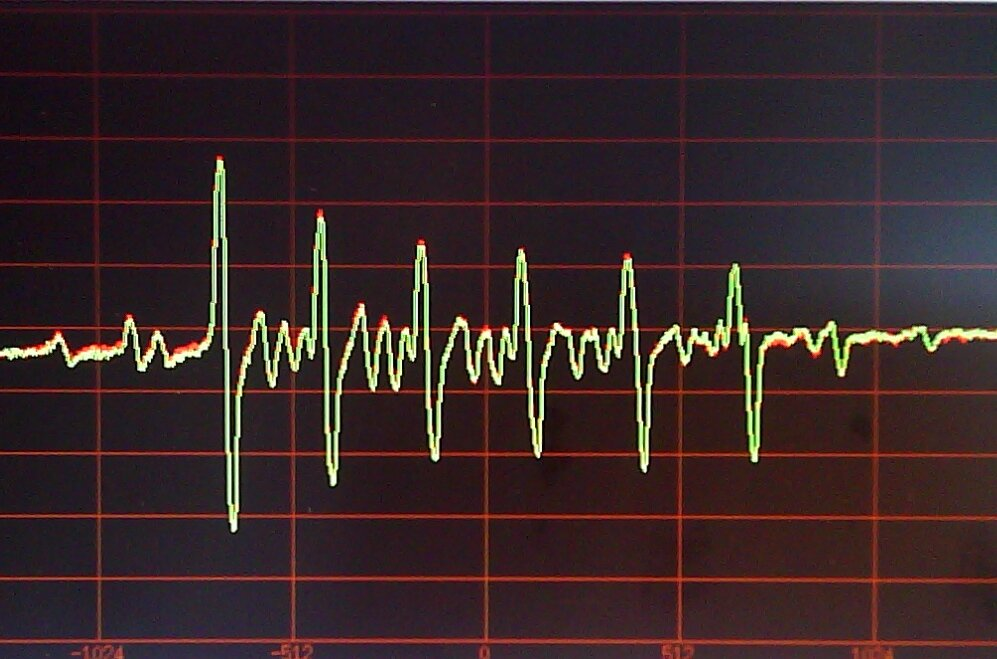

Какими бывают магнитные резонансы
Специалисты в области магнитного резонанса могут меня упрекнуть в том, что я не заслуженно обхожу стороной такие методы, как ЭПР, ЯКР, ферромагнитный резонанс. Но я это делаю только из-за соображений большей распространённости ЯМР и большого количества областей его применения. Тем не менее, у меня есть желание немного здесь рассказать и о других магнитных резонансах.
Начнём, пожалуй, с электронного парамагнитного резонанса (ЭПР). У электрона, как и у многих ядер есть спин и заряд, только он отрицательный. Значит, как и ядра электрон можно возбудить специально подобранным импульсом. Конечно, возбуждать будем не сами ядра и электроны, а их магнитные моменты, но позвольте мне здесь использовать профессиональный жаргон. Можно возбуждать электроны как и ядра, но есть несколько моментов. Во-первых, в нашем распоряжении не все электроны, а только свободные, то есть неспаренные. Вы помните, наверное, что на одной орбитали атома могут располагаться два электрона с противоположными спинами. А если на орбитали электроны с разными спинами, то суммарный магнитный момент равен нулю. И такие электроны будут нечувствительны к нашему возбуждающему импульсу. Во-вторых электрон частица очень лёгкая и быстрая, по сравнению с ядром, и для её возбуждения потребуются частоты на несколько порядков выше, а это заметно усложняет и эксперимент и оборудование. В-третьих, резонансные частоты неспаренных электронов у одного и того же атома в разных соединениях могут значительно отличаться, рассчитывать их достаточно сложно, поэтому в ЭПР-щики, в отличие от ЯМР-щиков, о резонансных частотах не говорят, а используют другие, свои термины.
Преимущество ЭПР перед ЯМР в том, что сигналы от электронов гораздо сильнее, чем от ядер. Поэтому образцы в ЭПР, как правило меньше кубического миллиметра. Для таких маленьких образцов достаточную однородность магнитного поля можно получить с менее качественным магнитом. Кстати, именно по этой причине Евгений Завойский, пытаясь "нащупать" ЯМР на своём магните, сделанного из старого сварочного аппарата, переключился на ЭПР и успешно его открыл, правда, об этом было известно только в СССР (в то время шла "холодная" война).

пример ЭПР-спектра
ЭПР успешно используется там, где есть свободные радикалы. Это несколько ограничивает его применение. Но известны очень неожиданные применения ЭПР, например, в археологии при датировании, наряду с углеродным анализом.
Метод ядерного квадрупольного резонанса (ЯКР) использует необычные ядра, "некруглые". Это ядра, у которые имеют не сферическую оболочку, а сплюснутую или вытянутую. Тогда говорят, что они имеют квадрупольный момент, из-за этого у ядра появляется дипольный момент, то есть заряд имеет не сферическую форму, а эллипсоидную. Это значит, что в кристаллической решётке где электрические заряды упорядочены, такое ядро будет ориентироваться, подчиняясь свойствам кристаллической решётки. Такие ядра есть, например, у изотопов хлора и азота. А азот входит в состав наркотических и взрывчатых веществ, поэтому ЯКР нашел основное применение у спецслужб. Да, и как же работает этот метод? Для наблюдения ЯКР, эти квадрупольные ядра также должны иметь спин. Тогда на их магнитный момент также можно воздействовать возбуждающим импульсом. Только внешнее магнитное поле уже не нужно. Его роль выполняют заряды в кристаллической решётке. Недостаток метода - слишком большой спектр частот. Поиск резонанса сильно затруднён. Можно регистрировать только вещество, на которое настроен прибор. Перестройка прибора на то же ядро, но в другом соединении, крайне проблематична.
Ферромагнитный резонанс отчасти похож на ЭПР, поскольку в нем участвуют электроны, находящиеся во внутреннем магнитном поле образца, но поглощаемая энергия при ферромагнитном резонансе на несколько порядков выше, чем в ЭПР. Использование такого резонанса ограничено СВЧ-техникой.
�